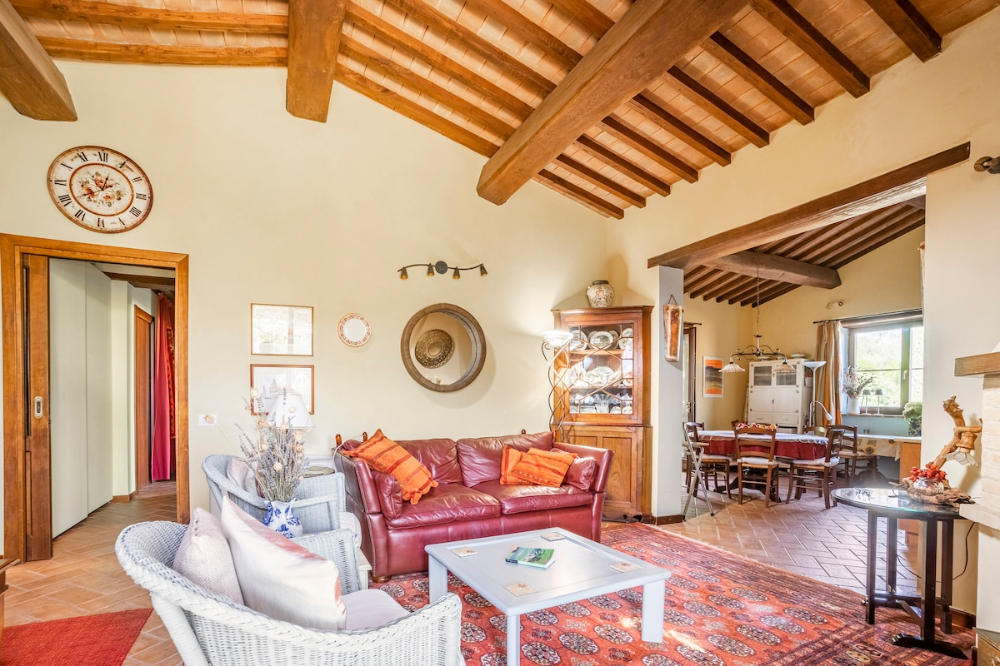
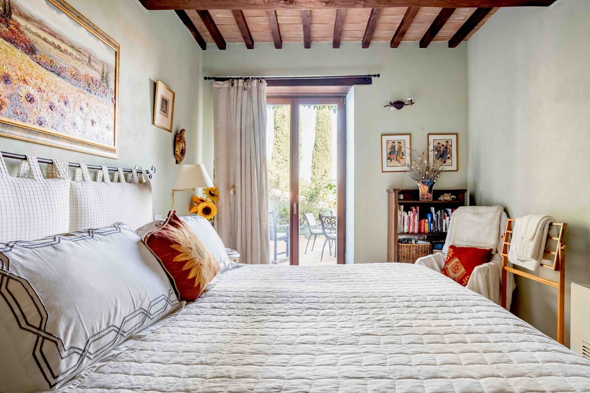
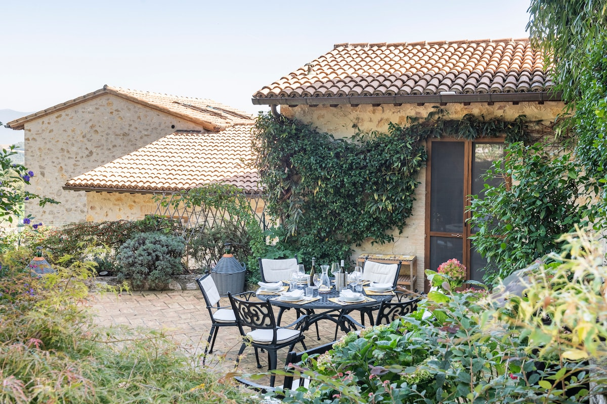
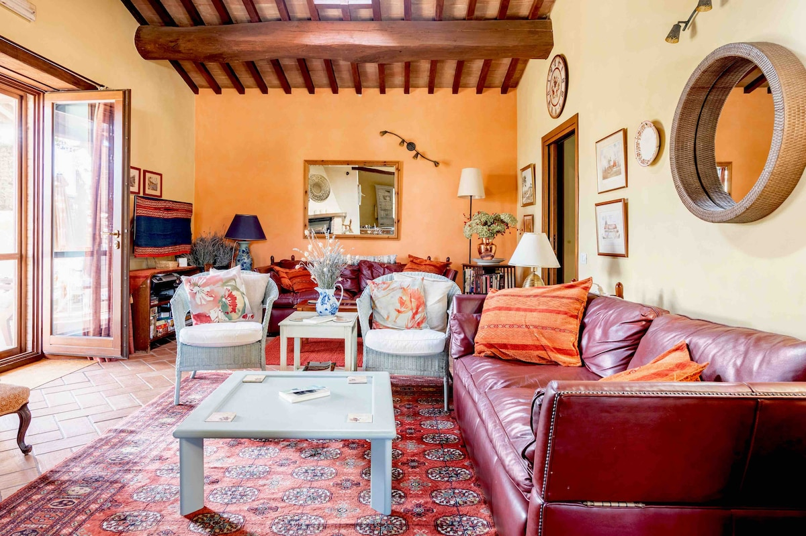

The Villa
A glimpse of life at La Sosta di Sismano.






Sismano · Umbria · Italy
A peaceful retreat in the green heart of Italy, with beautiful views across the Umbrian hills.
Nestled in the tiny medieval hamlet of Sismano, our villa offers an authentic escape into the Umbrian countryside. Umbria — il cuore verde d'Italia, the green heart of Italy — is a land of rolling hills, ancient olive groves, and vineyards stretching to the horizon. Here, time moves a little slower and every evening brings a sunset you won't forget.
Everything you need for an unforgettable stay in the Italian countryside.
Sismano sits just south of Todi, surrounded by medieval hill towns, with easy day trips to Orvieto, Assisi, Deruta, Spoleto, and even Rome.
Walk through olive groves, visit local wineries, browse Deruta's pottery workshops, or simply enjoy long Italian dinners under the stars.
A thoughtfully decorated home for up to 3 guests, blending rustic Umbrian charm with everything you need to feel at home.
A glimpse of life at La Sosta di Sismano.
from 33 reviews on Airbnb